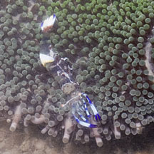
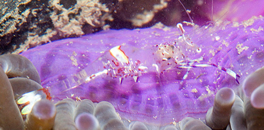

|
|
| shrimps text index | photo index |
| Phylum Arthropoda
> Subphylum Crustacea > Class
Malacostraca > Order Decapoda
> prawns and shrimps > Family Palaemonidae |
| 'Gelek'
anemone shrimp Ancylomenes holthuisi Family Palaemonidae updated Jan 2020 Where seen? This slender shrimp is rarely seen, sometimes in large sea anemones. It 'dances' in a waggling way: 'gelek' means dance in Malay. Features: About 2cm. Body almost transparent with a brown-spotted white patch behind its head, a white patch on its 'butt', with purplish-blue tips on its tail and pincers. Does it 'clean' fish? A filefish was once observed close to an anemone shrimp for some time. Could it be expecting the shrimp to clean it? What does it eat? Anemone shrimps do not appear to eat the host anemone or off the anemone's fluids. Instead, they are believed to shelter in the anemone for protection and may feed on left overs. The shrimps have often been seen "hanging" over the edge of their anemone home with their pincers extended. |
|
 Seen in a Haddon's carpet anemone. Changi, Aug 13 |
| 'Gelek' anemone shrimps on Singapore shores |
On wildsingapore
flickr
|
| Other sightings on Singapore shores |
 Seen in a Magnificent anemone. Pulau Semakau, Aug 11 Photo shared by Marcus Ng on flickr. |
| Heng Pei Yan shares this video clip of the shrimp doing the typical 'waggle' |
| Acknoweldgement Thanks to Marcus Ng for sharing the identity of this shrimp References
|